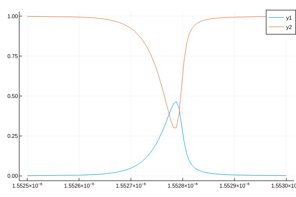

Fabry-Pérot etalon
This example shows how to model light propagation in a Fabry-Pérot (FP) etalon in Jolab.
using Jolab
using Plots; plotly();The optical system considered is based on the system used by D.Marques et al.. The first aim of this example is to calculate transmitted and reflected light intensity as a function of wavelength (λ) - typically known as Interferometer Transfer Function (ITF).
Designing the optical setup
The optical system is made by a single mode fibre, two lenses (labelled collimator and objective) and an FP etalon. We start by defining the optical fibre based on its Mode Field Diameter (mfd) and the position of the tip:
mfd = 10E-6 # Mode field diameter in meters
n_fibre = Jolab.refractiveindex_air(printBool = false) # refractive index outside the fibre
dir_fibre = 1 # Direction to which the fibre tip is pointing at (1 to forward and -1 to backward)
ref_fibre = ReferenceFrame(0, 0, 0., 0, 0) # Position and orientation of the fibre tip in meters (x,y,z,θ,ϕ)
fibre = SingleModeFibre(mfd, n_fibre, dir_fibre, ref_fibre);We now define the first lens, labelled collimator, based on its focal length, numerical aperture and position:
f_col = 15E-3 # focal length in meters of the collimator
na_col = 1 # Numerical aperture of the collimator
ref_col = ReferenceFrame(0, 0, f_col, 0, 0) # Position of the collimator in meters (x,y,z,θ,ϕ)
collimator = Lens(f_col, na_col, ref_col);Similarly the second lens:
f_obj = 15E-3 * 8 # focal length in meters of the objective
na_obj = 1 # Numerical aperture of the objective
ref_obj = ReferenceFrame(0, 0, 2f_col + f_obj, 0, 0) # Position of the objective in meters (x,y,z,θ,ϕ)
objective = Lens(f_obj, na_obj,ref_obj);The last optical component to be defined is the FP etalon. The FP etalon is defined as two mirrors placed sequentially on the optical setup:
R₁ = 0.9925; # Reflectivity of the first mirror
R₂ = 0.9925; # Reflectivity of the second mirror
h = 102E-6; # Cavity thickness in meters
n₁ = Jolab.refractiveindex_air(printBool = false); # Refractive index before the first mirror
n₂ = Jolab.refractiveindex_fusedsilica(printBool = false); # Refractive index before the first mirror
n₃ = Jolab.refractiveindex_air(printBool = false);# Refrative index after the second mirror
ref_m₁ = ReferenceFrame(0, 0, 2f_col + 2f_obj); # Position of the first FP mirror in meters (x,y,z)
ref_m₂ = ReferenceFrame(0, 0, 2f_col + 2f_obj + h); # Position of the second FP mirror in meters (x,y,z).
mirror1 = Mirror(R₁, n₁, n₂, ref_m₁); # Creates the first mirror. Specifies the refractive index before and after the mirror and the position
mirror2 = Mirror(R₂, n₂, n₃, ref_m₂); # Creates the second mirror. Specifies the refractive index before and after the mirror and the position
fp = [mirror1, mirror2]; # Defines the FP etalonDefinition of the simulation parameters
The aim of the simulation is to propagate the light emerging for the fibre by the optical system. The reflected light propagates back by the optical setup and goes back inside the fibre that leads to a detector. To calculate the ITF we need to evaluate the intensity as a function of the wavelength:
λ = range(1552.5E-9, 1553E-9, length = 100) # range of wavelength in meters
itf_r = zeros(length(λ)); # preallocation of the array to store the result
itf_t = zeros(length(λ)); # preallocation of the array to store the result
sx = range(-.2, .2, length = 100); # Directions of the plane waves considered. It is related with the angles by sx = sinθcosϕ. Affect the model convergence
sy = range(-.2, .2, length = 100); # Directions of the plane waves considered. It is related with the angles by sy = sinθsinϕ. Affect the model convergencePropagating the field by the optical system
The optical system and the simulation parameters were defined on the previous section. The code bellow propagates the light by the optical setup and calculates the intensity detected on the detector.
for i in eachindex(λ)
field = FieldAngularSpectrum_fromfibre(fibre, sx, sy, λ[i]); # Field in the tip of the fibre
(tmp, field) = lightinteraction(collimator, field) # Field in the back focal plane of the collimator/objective
(tmp, field) = lightinteraction(objective, field) # Field in the focal plane of the objective
(fieldr, fieldt) = lightinteraction(fp, field) # Reflected field by the Fabry Perot etalon
itf_t[i] = intensity(fieldt)
(fieldr, tmp) = lightinteraction(objective, fieldr) # Reflected field in the back focal plane of the collimator/objective
(fieldr, tmp) = lightinteraction(collimator, fieldr) # Reflected field in the focal plane of the collimator, i.e., the tip of the fibre
itf_r[i] = signal(fibre, fieldr); # Calculate the signal measured using a fibre based detection system
end
plot(λ, itf_t)
plot!(λ, itf_r)
This example is concluded with the calculation of the ITF. A good application of this model is to better understand the physics behind the interrogation of FP etalons with focused beam. As visible in the plot, the ITF is asymmetric (regarding the wavelength axis) its peak transmissivity is lower than one. Both features do not occur if the a collimated beam is incident upon an FP etalon as visible in this work.
Jolab will be used to explain the reason for the reduction on the peak transmissivity and the ITF asymmetry. To explain the asymmetry, the angular spectrum of the transmitted beam will be plotted as the wavelength varies within an ITF.
for i in eachindex(λ)
field = FieldAngularSpectrum_fromfibre(fibre, sx, sy, λ[i]); # Field in the tip of the fibre
(tmp, field) = lightinteraction(collimator, field) # Field in the back focal plane of the collimator/objective
(tmp, field) = lightinteraction(objective, field) # Field in the focal plane of the objective
(fieldr, fieldt) = lightinteraction(fp, field) # Reflected field by the Fabry Pérot etalon
plot(fieldt) # Display the transmitted angular spectrum
end (The data shown in this figure is not for the same conditions as in this script)
(The data shown in this figure is not for the same conditions as in this script)
As visible in the animation, an FP etalon acts simultaneously as both wavelength and angular filter which creates the ITF asymmetry and reduction in the peak transmissivity. The same conclusion where made by D.Marques et al. and Prof. Shaoul Ezekiel